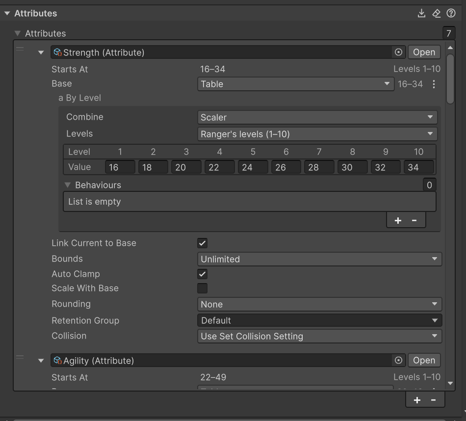

Attributes
The Attributes section lists the set's elements, each of which sets up one attribute. Folded, an element shows one line: what its attribute starts at, and its range.

Ranger Attributes's Attributes section.
| Property | Description |
|---|---|
| Attribute | The attribute asset, in the element's row. |
| Starts At | What the attribute starts at, at each of the set's levels. |
| Base | A magnitude field, as an effect's are: a number, or a cached scaler with how the number combines with it. |
| Link Current to Base | Current takes Base's number and scaler, and its own field hides. |
| Current | A magnitude field, as Base is. |
| Bounds | The range the values are held in, with the Floor and Ceiling the policy reads, each a Current and a Base. |
| Auto Clamp | Applies the Bounds. With it off, the Bounds are ignored at runtime. |
| Scale With Base | When Base changes, changes Current by the same share. A value of 80/100 that loses half its Base ends at 40/50. |
| Rounding | None, To Floor, To Ceil, Round, or Snap To with a Snap Interval, a number field read at its owner's level. |
| Retention Group | The group the root value counts toward. Groups split an attribute's value for queries and UI, such as base and bonus health; they never change the math. |
| Collision | What to do when this attribute appears more than once across the set and its sub-sets. See Collision Settings. |
- One kind of cached scaler follows the entity's level. Another follows a different attribute, and this attribute is then worked out again whenever that one changes.
- The Base and Current fields' menus each copy the other side's number and scaler into the field.
- Rounding applies after the Bounds, each time the value changes. So it can make a change bigger or smaller than its effect asked for.
In this section
- Starts At: Starts At shows what an element's attribute starts at, at each of the set's levels, with the levels on the right.
- Bounds: An element's Bounds set the range its values are held in, with the Floor and Ceiling the policy reads, each a Current and a Base.
- Preview In: Preview In shows a set's elements as part of a set that holds it.